全国中小学生学籍管理系统操作指南
作者：TeliuTe 来源：基础教程网
二十、在校生查询 返回目录 下一课在校生查询中，可以查询某个学生是否在校，状态，导出学生完整资料信息；
1、在校生查询
1）依次点“学籍管理－综合查询－在校生查询”，出来在校生查询面板；
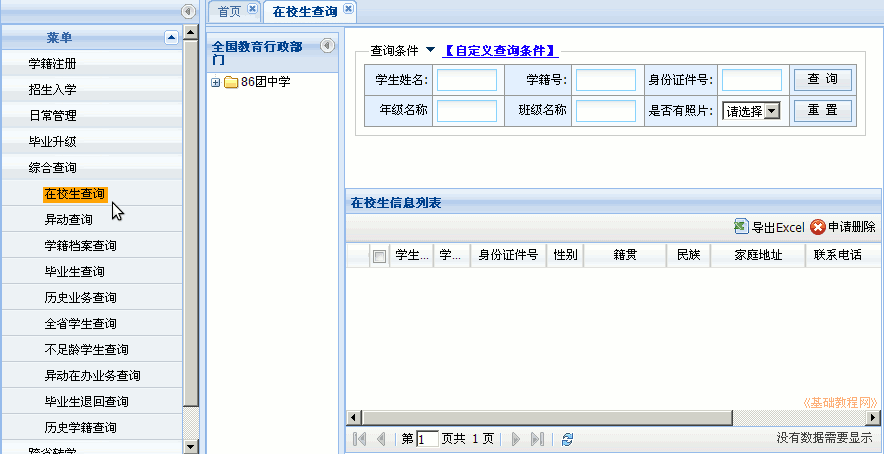
2）输入学生姓名，点查询，可以查看学生的学籍号、身份证号、联系方式、当前学生状态；
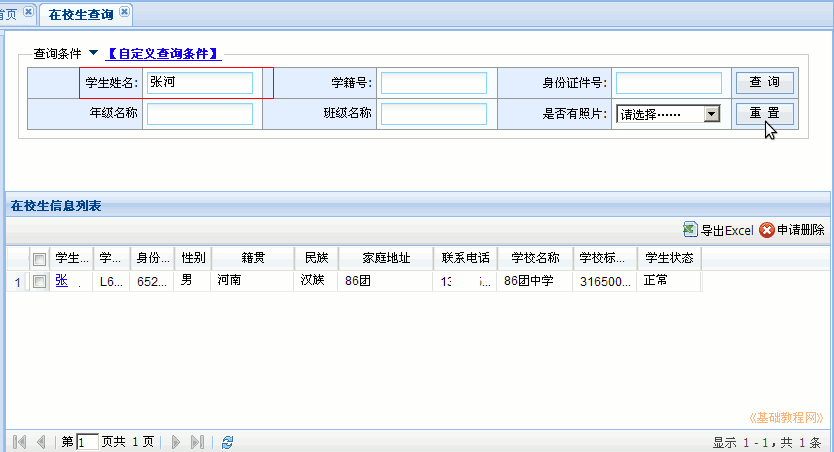
3）选择一个班级，点查询，可以查看整个班的学生信息状态；
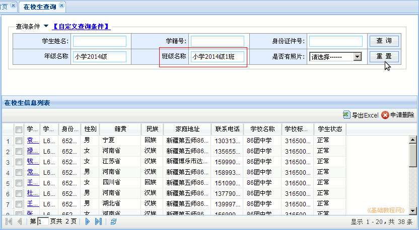
4）在条件里选“是否有照片”，可以查出没有上传照片的学生名单列表；
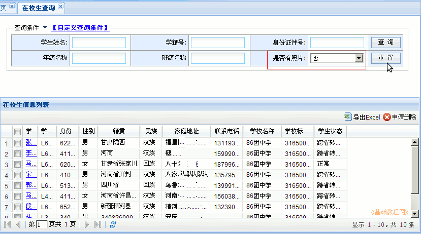
5）不选择条件直接点“查询”，显示全校学生名单，点右边的“导出Excel”按钮；
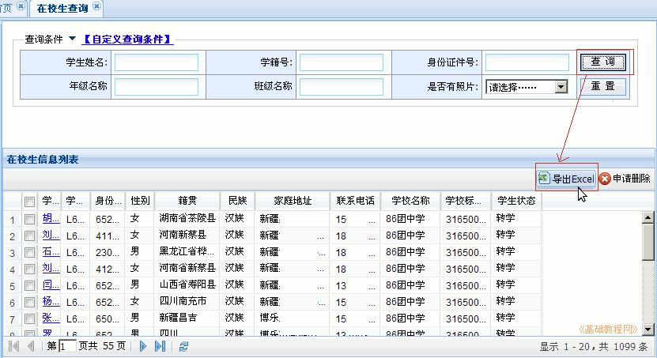
6）在出来的验证面板中，输入自己的用户名和密码，用户名参考：系统管理-修改个人信息；
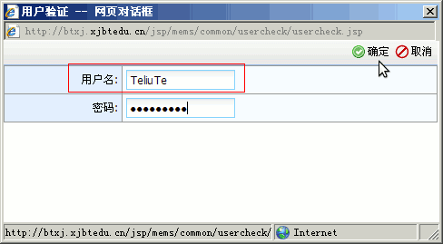
7）点确定，显示可选内容项目，在左边栏选中后点箭头添加到右侧，可以用Ctrl或Shift键多选；
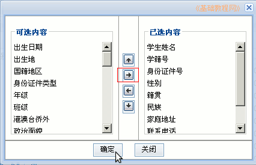
8）点“确定”，保存为“在校生信息.csv”文件，可以用电子表格软件打开查看；
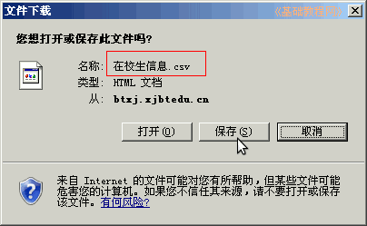
2、删除学籍
1）学生因各种原因，需要删除学籍，在校生查询中选中后，点右边的“申请删除”；
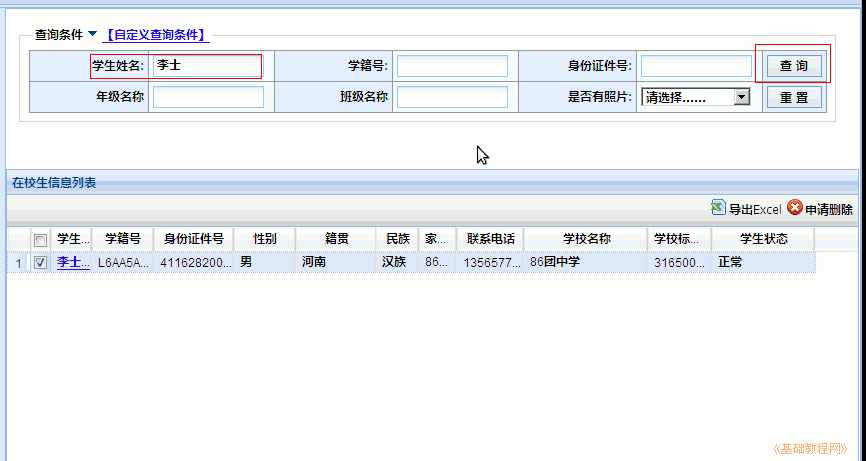
2）在出来的确认对话框里，点“是”，提示操作成功；
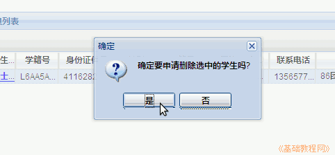
3）点右上角“系统管理－误操作删除”，点“查询”可以找到删除的学生，在上级主管未处理前，可以点右边“取消申请”，撤销删除操作，一旦上级处理完，学生的学籍就会被删除；
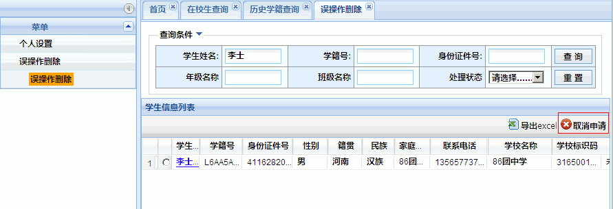
本节学习了在校生查询的基础知识，如果你成功地完成了练习，请继续学习下一课内容；
本教程由TeliuTe制作|著作权所有
基础教程网：http://teliute.org/
美丽的校园……
转载和引用本站内容，请保留作者和本站链接。